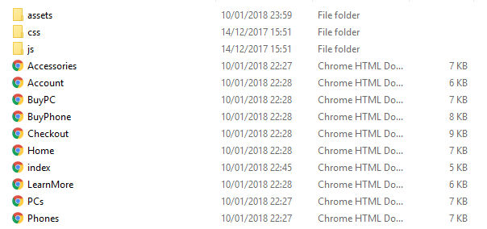

Hello Luke!

Name:
Luke Bond
Student ID:
17642745
Learning Outcomes:
[LO1] – Understand the strengths and weaknesses of current web specifications and standards over previous version iterations.
[LO3] – Apply appropriate web standards ensuring maximum interoperability.
Website: Supported Link
The Critical Log:
In this document, I will be talking about how interoperability is important and how I have applied these web standards in a website that I have created from scratch. I will also be outlining the strengths and weaknesses of web standards over previous iterations. The definition of interoperability is how information is exchanged and made use of [1]. For example, a website displays information that is useful to others and it is displayed digitally and publicly to everyone around the world that is interested in using that information.
Other the past 15 weeks, I have been working on a responsive website using my acquired skills from the university. I was given the choice to create a website for a band or a brand that either is an official band/ company or could be made up. I had decided to develop a new brand for this assignment, although it hasn’t been very made up as I have been developing a brand of my own for some time. When planning out the website, I used popular websites to help make the site look professional. As my brand was a technology company, I had to be technical and support the web standards that are now law to follow when publishing a website. Using all of the techniques learned from my university, I applied particular web standards that most companies would use. However, when using a validation check website, there were many web standards that, I admit, had no idea on why the standards were so specific.
Through my website, I had designed 9 web pages, 2 of which are duplicated styles. I have tried to stick with my site map in designing the website, however a few pages on my site map have been merged with other pages to make the website more professional and to cut down a massive number of pages. I will be showing the validation reports of all the individual pages, going through and fixing them. I can confirm that none of my pages were validated when I put them into the validator. A lot of my pages had a lot of duplicated code within it, for example the footer and heading were always the same and so that was simple to edit one page and then paste the code throughout the pages. The body of the pages also had errors and problems ranging from CSS, HTML and JavaScript errors, however they did not affect the overall performance of the website
File Structure / Organisation:
Throughout my code I managed to organise all the pages. As I had decided to use one stylesheet for the entire website, I had to make sure it was just not piles of code, I had to organise it by commenting certain areas. I commented the styles by pages so that if anyone who was developing or editing the website, the developer would know where each of the styles are for each page. When developing my root folder, I assigned folders for each of the different file extensions. For example, I was dealing with HTML, CSS, JS and Jquery. These had their separate folders. As JS and Jquery can be used together, I only assigned for them. I also made an assets folder which contained all the images used for the website. Here is an image of my file structure.

W3C Validation Report
Index.html
Home.html
Phones.html | PCs.html
Accessories.html
BuyPhone.html | BuyPC.html
LearnMore.html
Checkout.html
W3C Validation Summary
A problem that occurred in all instances is that I used the same IDs throughout all my html documents. The W3C gave me a warning for that, however I believe that in this case it wouldn’t affect my website. The reason I made them all IDs was because there was only one occurrence of them within each of the html documents.
Another error that has come up on the validation report is that I am not using alternative images for the image tags. This displays a default image if the original one is not found or irretrievable. Many websites use this just in case things go wrong. It’s better to have something there than nothing at all.
The validator also picked up an error that I was marking up my body with tags. This was an issue for the validator because I believe if you do not tag the head or the footer it will automatically be part of the body. I believe that having the header, body and footer there makes it easier for the developer to organise their code. As everything is cascaded, it’s good to see it visually using tabs and other tags.
Considering the errors, they didn’t seem to be massive mistakes that could potentially harm the website. They give a more grammatical way of thinking about HTML. Providing you with the most important properties that are required for each of the tags.
Next time I develop a website, I will make sure that all the pages are fully validated. I was expecting a few to be completely validated but as most of the entities on the page were duplicates of things like the navigation bar and the footer. The only thing that changes is the body mainly. A few weaknesses would be the fancy art that I would have needed to find to make the website look stunning. As seen by the website, I made every single icon and image apart from the one displayed in the accessories page. Hopefully I will be able to learn how to use photoshop or take fascinating pictures to use for my website in the future. A strength of mine would be my creativity, I have a great mind and I tend to go the extra mile and try to be different from the other people. I didn’t really want to develop a website for a band or an existing brand because that would be easier than me coming up with a brand-new idea and creating a logo to represent the brand. It was a challenge for me and, so I took the freedom of the assignment to my advantage.
References:
Interoperability - Supported Link
| Publisher: Oxford Dictionaries